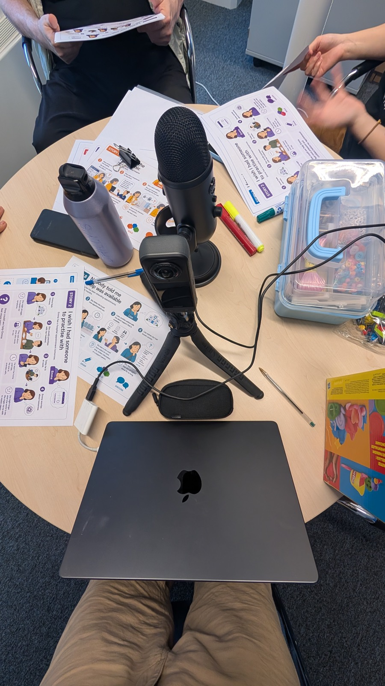
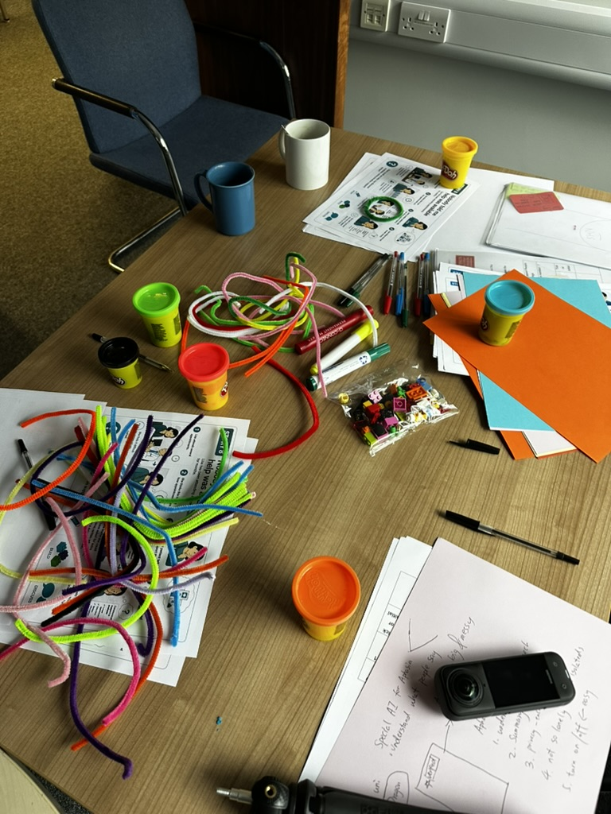

Research
Getting to the appointment is only the beginning
Designing better communication support across the healthcare journey

You call your GP surgery to book an appointment. A recorded voice gives you several options. You wait, someone answers, and you need to explain why you're calling. Later, there may be a form to complete, directions to follow and questions to prepare. By the time you sit down with the doctor, you have already done a lot of communicating.
A 2022 Healthwatch England survey of 605 people who needed communication support found that 30% rarely or never received the support they needed. Behind that figure are everyday experiences of trying to get an appointment, explain a concern or understand what happens next. We wanted to understand the work people with aphasia do to get through this journey, and where better support could make a difference.
Much of our healthcare system rests on an assumed fluency: being able to explain, understand, read and respond when required. For people with aphasia, these expectations can turn language into a stop-or-go signal at each stage of care. Getting through may depend on finding the words quickly enough, understanding an instruction or having someone alongside you to help.
Our latest study brought together the experiences of 23 people with aphasia and six healthcare professionals. We began by talking with professionals about the different routes people take through healthcare. Then, through quizzes, discussions and design workshops, people with aphasia helped us explore what those routes actually feel like.
People shared the work they were already doing to make healthcare possible. They rehearsed conversations with family, wrote down symptoms and questions, and kept notebooks they could take to appointments.

These experiences became the starting point for designing together. Using illustrated story cards, we explored situations people recognised and imagined what might help. Ideas included a badge or card that could share communication needs at reception, tools for preparing questions and revisiting what the doctor said, and clearer ways to find out what support was available.
The work is giving us a clearer direction for designing healthcare technologies: support needs to connect what happens before, during and after an appointment. We're looking forward to developing these ideas further with people with aphasia, and sharing what we learn along the way.
Thank you to everyone who shared their experiences, worked through ideas and asked the questions that moved our thinking forward.